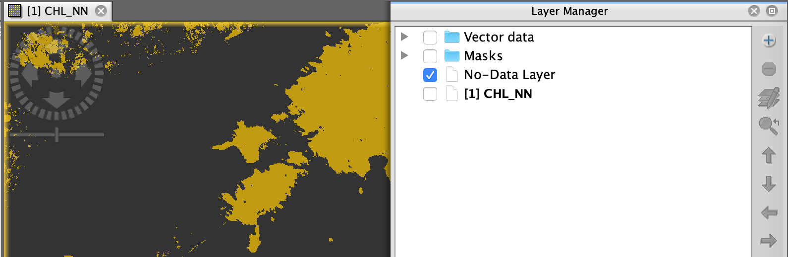
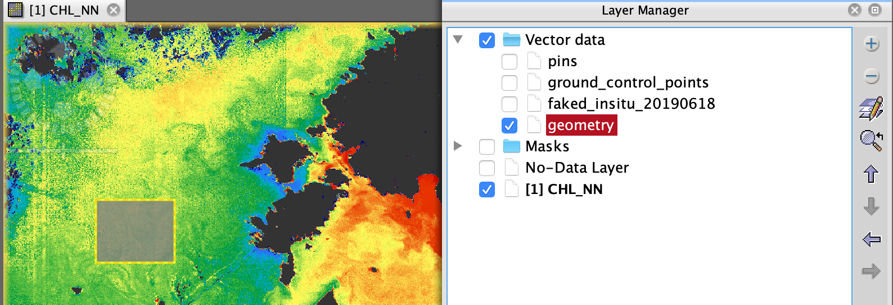
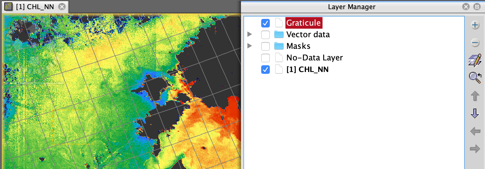
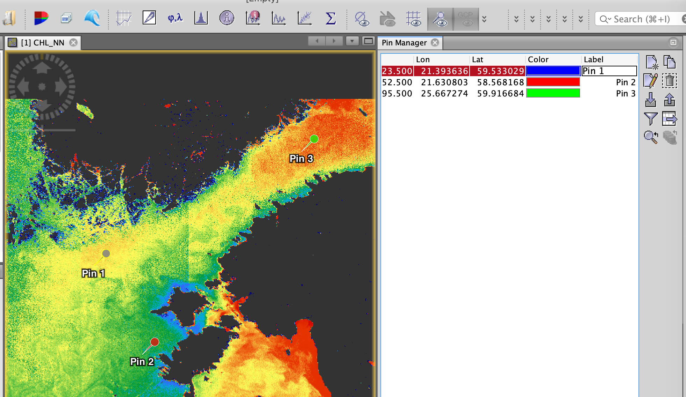
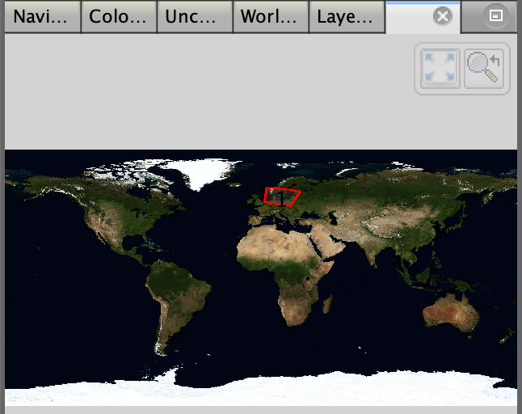

| Layer Menu | |
Toggles the overlay of a no-data mask over the band Image View. The overlay properties can be modified at the no-nata overlay page in the Preferences Dialog.
|  |
| No-Data layer on Layer Manager |
Toggles the overlay of a Geometry over the band Image View.
|  |
| Geometry on image view |
Toggles the overlay of a graticule (geographic lat/lon grid) over the current image. The Map Gridlines overlay properties can be modified in the preferences dialog.
|  |
| Map Gridlines layer on image view |
Toggles whether or not to display the pins defined for the current product in the current Image View.
|  |
| Pins and pin manager on image view |
Toggles whether or not to display the Ground Control Points (GCPs) defined for the current product in the current Image View.
Toggles whether or not to display a world map layer. Which kind of world map layer is displayed can be chosen in the Opeions Dialog.
|  |
| Worldview |
Opens or brings in front the Layer Manager window. See here.
The Layer Editor lets you alter layer properties in order to control the display of layer data. See here.